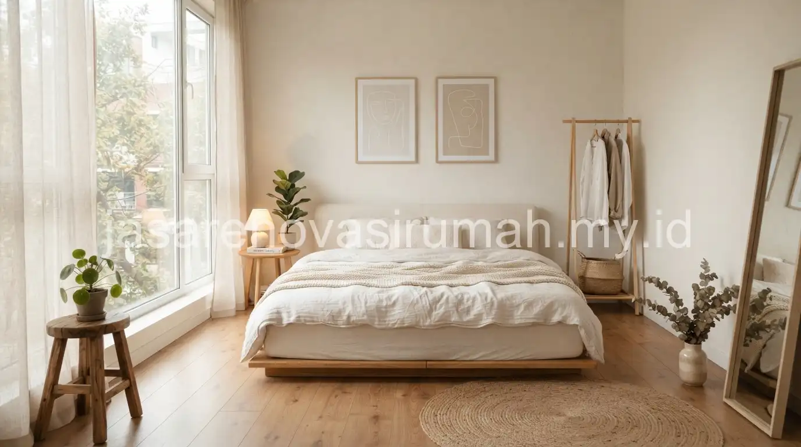
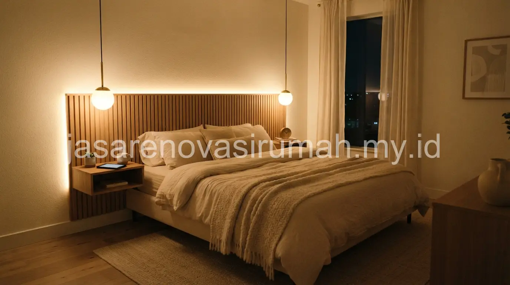

Desain interior kamar tidur minimalis ala Korean style mengedepankan warna netral seperti krem, putih gading, dan cokelat muda, furnitur berkaki rendah, serta pencahayaan hangat yang membuat suasana kamar terasa tenang dan tidak berantakan.
Ciri khas lain yang mudah dikenali adalah minimnya dekorasi berlebihan, dengan fokus pada kenyamanan tekstur seperti linen dan kayu natural dibanding warna-warna mencolok.
Apa Ciri Khas Desain Kamar Tidur Minimalis ala Korean Style?
Ciri utamanya adalah kesederhanaan bentuk furnitur, penggunaan material alami, dan penataan ruang yang lapang tanpa banyak sekat visual.
Beberapa elemen yang sering muncul pada kamar tidur bergaya Korean minimalist:
- Tempat tidur berkaki rendah atau bahkan tanpa kaki (platform bed) untuk kesan lebih membumi.
- Meja rias atau meja kerja kecil dengan desain ramping tanpa ukiran.
- Cermin bulat atau oval sebagai elemen dekoratif utama.
- Tanaman hias kecil di sudut ruangan untuk menghadirkan kesan segar.
Gaya ini memiliki kemiripan prinsip dengan penataan desain interior kitchen set minimalis yang juga mengutamakan efisiensi ruang dan kebersihan visual, meski diterapkan pada fungsi ruangan yang berbeda.
Warna dan Pencahayaan Seperti Apa yang Membuat Kamar Terasa Menenangkan?
Warna netral hangat seperti krem, putih gading, dan abu muda dipadukan dengan pencahayaan warm white adalah kombinasi paling umum untuk menciptakan suasana kamar yang menenangkan.

Beberapa tips pencahayaan yang bisa diterapkan:
- Gunakan lampu utama dengan cahaya warm white, bukan cool white yang terasa terlalu terang dan dingin.
- Tambahkan lampu meja atau lampu dinding di dekat tempat tidur untuk pencahayaan lembut saat malam hari.
- Manfaatkan cahaya alami dari jendela dengan tirai tipis berwarna netral agar cahaya tetap masuk namun tidak menyilaukan.
- Hindari pencahayaan langsung yang terlalu terang tepat di atas tempat tidur.
Kombinasi warna dan pencahayaan ini juga membantu kamar terlihat lebih luas dari ukuran sebenarnya, terutama jika dipadukan dengan pemilihan furnitur yang tepat.
Baca Juga: 15 Desain Rumah Minimalis Modern Tren 2026
Bagaimana Menata Furnitur Kamar Tidur Kecil agar Tetap Terasa Lapang?
Kunci utamanya adalah membatasi jumlah furnitur hanya pada yang benar-benar dibutuhkan, serta memanfaatkan furnitur multifungsi untuk menghemat ruang.
Beberapa strategi penataan furnitur untuk kamar tidur berukuran kecil:
- Pilih tempat tidur dengan laci penyimpanan di bagian bawah untuk menghemat kebutuhan lemari tambahan.
- Gunakan rak dinding gantung dibanding rak lantai untuk menyisakan ruang gerak lebih luas.
- Letakkan cermin di sisi berlawanan jendela agar memantulkan cahaya dan membuat ruangan terasa lebih terang.
- Batasi palet warna maksimal tiga warna utama agar ruangan tidak terasa ramai secara visual.
12 Inspirasi Konsep Kamar Tidur Minimalis Korean Style
Berikut ragam konsep yang bisa disesuaikan dengan ukuran kamar dan preferensi pribadi Anda:
- Kamar dengan platform bed kayu natural dan seprai linen putih.
- Kamar dengan aksen dinding krem dan lampu gantung bulat.
- Kamar dengan meja belajar kecil di dekat jendela.
- Kamar dengan rak buku terbuka bergaya minimalis.
- Kamar dengan karpet bulu tipis warna netral.
- Kamar dengan cermin bulat besar sebagai focal point.
- Kamar dengan gorden tipis warna gading untuk cahaya lembut.
- Kamar dengan headboard kain bertekstur linen.
- Kamar dengan tanaman gantung kecil di sudut ruangan.
- Kamar dengan lampu tidur berbentuk lampion kertas.
- Kamar dengan nakas kayu minimalis tanpa handle mencolok.
- Kamar dengan dinding aksen warna sage hijau lembut.
Untuk hasil yang lebih presisi sesuai ukuran dan pencahayaan alami ruangan Anda, konsultasikan konsep ini dengan jasa desain interior yang dapat membantu menyesuaikan tata letak furnitur secara langsung di lokasi.
Kesalahan Umum Saat Mendesain Kamar Tidur Minimalis
Kesalahan yang paling sering terjadi adalah menambahkan terlalu banyak dekorasi kecil yang justru membuat kamar terlihat penuh dan kehilangan kesan tenang yang menjadi ciri khas gaya ini.
Kesalahan lain yang perlu dihindari:
- Memilih warna dinding yang terlalu gelap sehingga ruangan terasa lebih sempit dan suram.
- Menempatkan terlalu banyak furnitur besar dalam satu ruangan berukuran kecil.
- Mengabaikan sirkulasi udara demi menata furnitur sedekat mungkin dengan dinding.
Pada akhirnya, desain kamar tidur minimalis ala Korean style yang baik mengutamakan kenyamanan visual dan fungsi, bukan sekadar mengikuti tren warna tertentu. Konsultasikan kebutuhan Anda dengan jasa desain interior kami agar hasil akhirnya benar-benar sesuai karakter dan ukuran ruangan Anda.